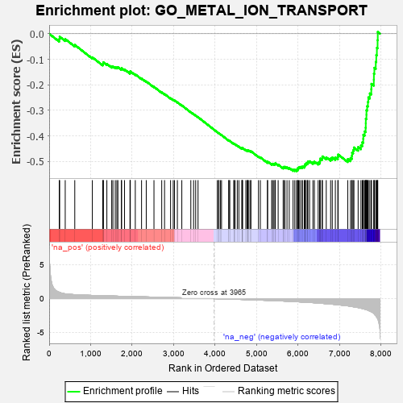
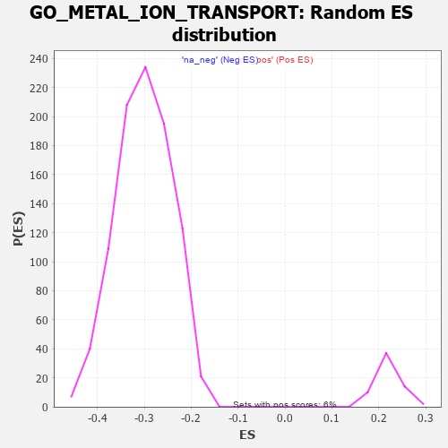

| | | Dataset | 7d |
| Phenotype | NoPhenotypeAvailable |
| Upregulated in class | na_neg |
| GeneSet | GO_METAL_ION_TRANSPORT |
| Enrichment Score (ES) | -0.53831834 |
| Normalized Enrichment Score (NES) | -1.7913085 |
| Nominal p-value | 0.0 |
| FDR q-value | 0.017195655 |
| FWER p-Value | 0.488 |
Table: GSEA Results Summary

Fig 1: Enrichment plot: GO_METAL_ION_TRANSPORT
Profile of the Running ES Score & Positions of GeneSet Members on the Rank Ordered List
| PROBE | GENE SYMBOL | GENE_TITLE | RANK IN GENE LIST | RANK METRIC SCORE | RUNNING ES | CORE ENRICHMENT | | 1 | NSF | | | 243 | 0.947 | -0.0207 | No |
| 2 | THADA | | | 253 | 0.931 | -0.0118 | No |
| 3 | BAX | | | 387 | 0.711 | -0.0210 | No |
| 4 | KCND2 | | | 617 | 0.590 | -0.0438 | No |
| 5 | AKT1 | | | 1040 | 0.476 | -0.0925 | No |
| 6 | PARL | | | 1290 | 0.432 | -0.1196 | No |
| 7 | CCS | | | 1302 | 0.427 | -0.1163 | No |
| 8 | KCNH7 | | | 1305 | 0.427 | -0.1120 | No |
| 9 | FKBP4 | | | 1390 | 0.412 | -0.1182 | No |
| 10 | ARMC1 | | | 1507 | 0.389 | -0.1288 | No |
| 11 | SCO1 | | | 1536 | 0.385 | -0.1282 | No |
| 12 | CUTC | | | 1593 | 0.375 | -0.1312 | No |
| 13 | ABCB8 | | | 1631 | 0.369 | -0.1320 | No |
| 14 | CSN2 | | | 1656 | 0.363 | -0.1311 | No |
| 15 | JPH1 | | | 1741 | 0.347 | -0.1380 | No |
| 16 | SLMAP | | | 1744 | 0.346 | -0.1345 | No |
| 17 | FMR1 | | | 1816 | 0.334 | -0.1400 | No |
| 18 | CUL5 | | | 1947 | 0.314 | -0.1531 | No |
| 19 | MCUR1 | | | 1953 | 0.313 | -0.1504 | No |
| 20 | MICU1 | | | 1954 | 0.313 | -0.1470 | No |
| 21 | KCNC2 | | | 2075 | 0.295 | -0.1591 | No |
| 22 | CDK2 | | | 2226 | 0.272 | -0.1753 | No |
| 23 | ANO6 | | | 2339 | 0.255 | -0.1868 | No |
| 24 | SPG7 | | | 2525 | 0.223 | -0.2080 | No |
| 25 | PHB2 | | | 2712 | 0.197 | -0.2296 | No |
| 26 | MAGT1 | | | 2780 | 0.186 | -0.2361 | No |
| 27 | ERO1A | | | 2925 | 0.162 | -0.2527 | No |
| 28 | ISCU | | | 2989 | 0.151 | -0.2591 | No |
| 29 | COX17 | | | 3019 | 0.147 | -0.2612 | No |
| 30 | CHP1 | | | 3089 | 0.138 | -0.2685 | No |
| 31 | KCNN1 | | | 3196 | 0.123 | -0.2807 | No |
| 32 | KCNK1 | | | 3413 | 0.088 | -0.3073 | No |
| 33 | CDK5 | | | 3480 | 0.080 | -0.3149 | No |
| 34 | ABCB7 | | | 3530 | 0.071 | -0.3204 | No |
| 35 | CHERP | | | 3587 | 0.062 | -0.3268 | No |
| 36 | ATG5 | | | 4051 | -0.016 | -0.3857 | No |
| 37 | KCNT2 | | | 4081 | -0.021 | -0.3892 | No |
| 38 | PDE4B | | | 4089 | -0.022 | -0.3899 | No |
| 39 | ABL1 | | | 4125 | -0.027 | -0.3940 | No |
| 40 | WNK3 | | | 4153 | -0.034 | -0.3971 | No |
| 41 | STAC | | | 4327 | -0.064 | -0.4185 | No |
| 42 | OPA1 | | | 4330 | -0.065 | -0.4180 | No |
| 43 | ADRB2 | | | 4352 | -0.068 | -0.4200 | No |
| 44 | TMCO1 | | | 4451 | -0.085 | -0.4316 | No |
| 45 | KCNQ4 | | | 4452 | -0.085 | -0.4306 | No |
| 46 | JPH3 | | | 4481 | -0.091 | -0.4332 | No |
| 47 | PLPP4 | | | 4533 | -0.101 | -0.4386 | No |
| 48 | MICU3 | | | 4571 | -0.110 | -0.4422 | No |
| 49 | LETM1 | | | 4644 | -0.127 | -0.4500 | No |
| 50 | NMUR2 | | | 4646 | -0.127 | -0.4487 | No |
| 51 | MYLK | | | 4651 | -0.128 | -0.4478 | No |
| 52 | ITPR1 | | | 4661 | -0.130 | -0.4476 | No |
| 53 | CNNM4 | | | 4738 | -0.147 | -0.4557 | No |
| 54 | PLCG1 | | | 4770 | -0.151 | -0.4580 | No |
| 55 | SARAF | | | 4781 | -0.153 | -0.4576 | No |
| 56 | MYO5A | | | 4787 | -0.155 | -0.4566 | No |
| 57 | P2RX4 | | | 4813 | -0.161 | -0.4580 | No |
| 58 | SGK1 | | | 4852 | -0.168 | -0.4610 | No |
| 59 | DLG1 | | | 4860 | -0.169 | -0.4601 | No |
| 60 | PDPK1 | | | 5043 | -0.207 | -0.4810 | No |
| 61 | DRD2 | | | 5088 | -0.221 | -0.4843 | No |
| 62 | SCN1A | | | 5260 | -0.261 | -0.5032 | No |
| 63 | PTEN | | | 5262 | -0.261 | -0.5005 | No |
| 64 | ITPR3 | | | 5361 | -0.288 | -0.5099 | No |
| 65 | GRIN1 | | | 5381 | -0.291 | -0.5092 | No |
| 66 | KCNC4 | | | 5414 | -0.298 | -0.5100 | No |
| 67 | NIPA2 | | | 5441 | -0.305 | -0.5100 | No |
| 68 | EFHB | | | 5447 | -0.306 | -0.5073 | No |
| 69 | VDR | | | 5517 | -0.325 | -0.5126 | No |
| 70 | G6PD | | | 5638 | -0.358 | -0.5240 | No |
| 71 | WNK1 | | | 5650 | -0.362 | -0.5215 | No |
| 72 | CD63 | | | 5680 | -0.370 | -0.5212 | No |
| 73 | CALCR | | | 5730 | -0.386 | -0.5233 | No |
| 74 | TRPC6 | | | 5784 | -0.401 | -0.5257 | No |
| 75 | ASIC4 | | | 5876 | -0.427 | -0.5326 | No |
| 76 | KCNQ1 | | | 5918 | -0.441 | -0.5331 | No |
| 77 | ACTN2 | | | 5960 | -0.458 | -0.5333 | Yes |
| 78 | STAC2 | | | 5987 | -0.466 | -0.5316 | Yes |
| 79 | KCNH6 | | | 5988 | -0.467 | -0.5265 | Yes |
| 80 | NETO2 | | | 6009 | -0.475 | -0.5239 | Yes |
| 81 | TRPC3 | | | 6035 | -0.483 | -0.5219 | Yes |
| 82 | SFXN1 | | | 6073 | -0.497 | -0.5212 | Yes |
| 83 | ABCB6 | | | 6106 | -0.507 | -0.5198 | Yes |
| 84 | SCN9A | | | 6146 | -0.518 | -0.5191 | Yes |
| 85 | KCNQ5 | | | 6161 | -0.524 | -0.5152 | Yes |
| 86 | STIM1 | | | 6169 | -0.528 | -0.5104 | Yes |
| 87 | ATP7B | | | 6194 | -0.535 | -0.5076 | Yes |
| 88 | KCNH8 | | | 6225 | -0.545 | -0.5055 | Yes |
| 89 | RGN | | | 6233 | -0.547 | -0.5005 | Yes |
| 90 | STK39 | | | 6274 | -0.563 | -0.4995 | Yes |
| 91 | GALR2 | | | 6355 | -0.599 | -0.5032 | Yes |
| 92 | TRPM4 | | | 6390 | -0.612 | -0.5009 | Yes |
| 93 | DYSF | | | 6481 | -0.654 | -0.5053 | Yes |
| 94 | TRPV4 | | | 6515 | -0.668 | -0.5022 | Yes |
| 95 | VAMP2 | | | 6525 | -0.672 | -0.4960 | Yes |
| 96 | REM1 | | | 6530 | -0.676 | -0.4892 | Yes |
| 97 | P2RX5 | | | 6576 | -0.699 | -0.4874 | Yes |
| 98 | ARF1 | | | 6583 | -0.701 | -0.4805 | Yes |
| 99 | DPP6 | | | 6676 | -0.751 | -0.4841 | Yes |
| 100 | TRPM8 | | | 6781 | -0.800 | -0.4887 | Yes |
| 101 | NMUR1 | | | 6821 | -0.828 | -0.4847 | Yes |
| 102 | HCN1 | | | 6895 | -0.865 | -0.4846 | Yes |
| 103 | SCN4A | | | 6955 | -0.910 | -0.4822 | Yes |
| 104 | DNM1L | | | 6963 | -0.913 | -0.4732 | Yes |
| 105 | TSPO | | | 7194 | -1.065 | -0.4910 | Yes |
| 106 | HCN4 | | | 7260 | -1.134 | -0.4870 | Yes |
| 107 | ASIC5 | | | 7293 | -1.160 | -0.4785 | Yes |
| 108 | ANK2 | | | 7298 | -1.170 | -0.4663 | Yes |
| 109 | TRPM1 | | | 7324 | -1.197 | -0.4564 | Yes |
| 110 | GPD1L | | | 7343 | -1.215 | -0.4455 | Yes |
| 111 | KCNB1 | | | 7444 | -1.327 | -0.4439 | Yes |
| 112 | VDAC1 | | | 7512 | -1.409 | -0.4371 | Yes |
| 113 | TRPM3 | | | 7544 | -1.461 | -0.4252 | Yes |
| 114 | CALM1 | | | 7567 | -1.499 | -0.4118 | Yes |
| 115 | TRPV6 | | | 7569 | -1.502 | -0.3956 | Yes |
| 116 | BEST1 | | | 7601 | -1.554 | -0.3827 | Yes |
| 117 | TRPA1 | | | 7625 | -1.608 | -0.3681 | Yes |
| 118 | PKD1 | | | 7628 | -1.611 | -0.3509 | Yes |
| 119 | KCNN2 | | | 7629 | -1.611 | -0.3334 | Yes |
| 120 | MCU | | | 7644 | -1.637 | -0.3174 | Yes |
| 121 | TRPM6 | | | 7645 | -1.637 | -0.2996 | Yes |
| 122 | HCN2 | | | 7662 | -1.668 | -0.2835 | Yes |
| 123 | TRPM2 | | | 7680 | -1.712 | -0.2671 | Yes |
| 124 | ANK3 | | | 7690 | -1.740 | -0.2494 | Yes |
| 125 | ASIC1 | | | 7726 | -1.838 | -0.2339 | Yes |
| 126 | TRPM7 | | | 7761 | -1.936 | -0.2172 | Yes |
| 127 | PDE4D | | | 7764 | -1.944 | -0.1963 | Yes |
| 128 | PKD2 | | | 7822 | -2.167 | -0.1801 | Yes |
| 129 | CLCA1 | | | 7824 | -2.171 | -0.1566 | Yes |
| 130 | KCNC1 | | | 7835 | -2.249 | -0.1335 | Yes |
| 131 | CALM3 | | | 7869 | -2.525 | -0.1103 | Yes |
| 132 | FYN | | | 7881 | -2.622 | -0.0832 | Yes |
| 133 | CAV3 | | | 7896 | -2.739 | -0.0552 | Yes |
| 134 | NPSR1 | | | 7913 | -2.947 | -0.0253 | Yes |
| 135 | ASIC2 | | | 7917 | -2.995 | 0.0069 | Yes |
Table: GSEA details [plain text format]

Fig 2: GO_METAL_ION_TRANSPORT: Random ES distribution
Gene set null distribution of ES for GO_METAL_ION_TRANSPORT